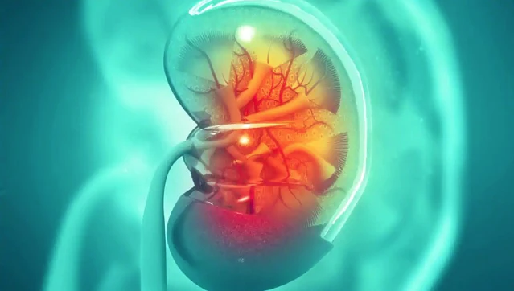

Ce este rinichiul artificial?

După zece ani de cercetare amănunțită, americanii de la Centrul Medical Cedars Sinai din Los Angeles și de la Școala Medicală David Geffen din cadrul UCLA au finalizat primul prototip al unui rinichi artificial ce va fi utilizat pentru înlocuirea procedurii clasice de dializă la pacienții bolnavi de rinichi.
În prezent, persoanele care sunt nevoite să facă dializă trebuie să se deplaseze periodic la spital pentru a fi cuplate la aparate sau să realizeze procedura acasă, prin intermediul unui echipament voluminos și complicat, care îi țintuiește la pat.
Noul rinichi artificial, numit WAK, face același lucru precum aparatura clasică de dializă, însă poate fi purtat de pacienți peste tot prin intermediul unui brâu, eliminând astfel necesitatea de a sta într-un singur loc în timpul procedurii.
În plus, un alt avantaj pe care îl semnalizează inventatorii rinichiului artificial este acela că WAK consumă doar jumătate de litru de apă în timpul dializei, în timp ce un aparat clasic de dializă folosește în jur de 150 de litri.
Care sunt componentele rinichiului artificial?
Dispozitivul implantabil dezvoltat în “The Kidney Project” constă în două componente principale:
- Un sistem de filtrare a sângelui numit hemofilter
- Un bioreactor
Hemofilter-ul elimină toxinele din sânge, trecându-le prin niște membrane de silicon fabricate într-o formă specifică, la scară nanometrică.
Bioreactor-ul conține celule culturate ale rinichiului uman, menite să realizeze alte funcții specifice rinichiului precum mentenanța unui volum adecvat și a unei presiuni corecte a sângelui, ajustarea nivelului de sare și producția hormonilor esențiali.
Care este modul de funcționare al rinichiului artificial?
Principiul de funcționare rinichiului artificial se bazează pe faptul că atunci când acesta este conectat la sistemul circulator uman, sângele din sistemul venos începe să se deplaseze în membrană. Pe altă parte lucrează soluția de dializă pentru curățare. Ca urmare, toxinele sunt eliminate din sânge, urmând ca apoi sângele purificat să revină în sistemul venos.
Dializa este pregătită în avans, luând în considerare caracteristicile pacientului și starea sa fizică. Insuși sistemul dispozitivului creează o soluție purificatoare utilizând apă distilată și mijloace concentrate în funcție de parametrii disponibili. După procedură, eficacitatea acesteia este evaluată prin mai mulți parametri.